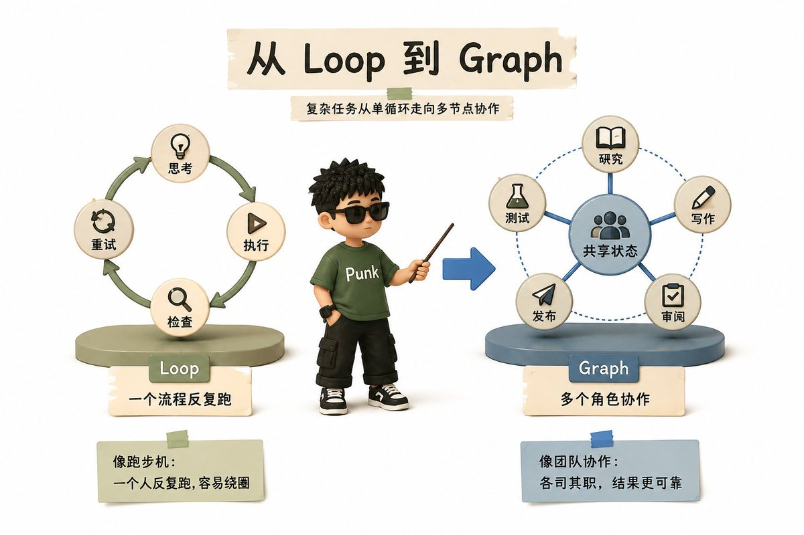
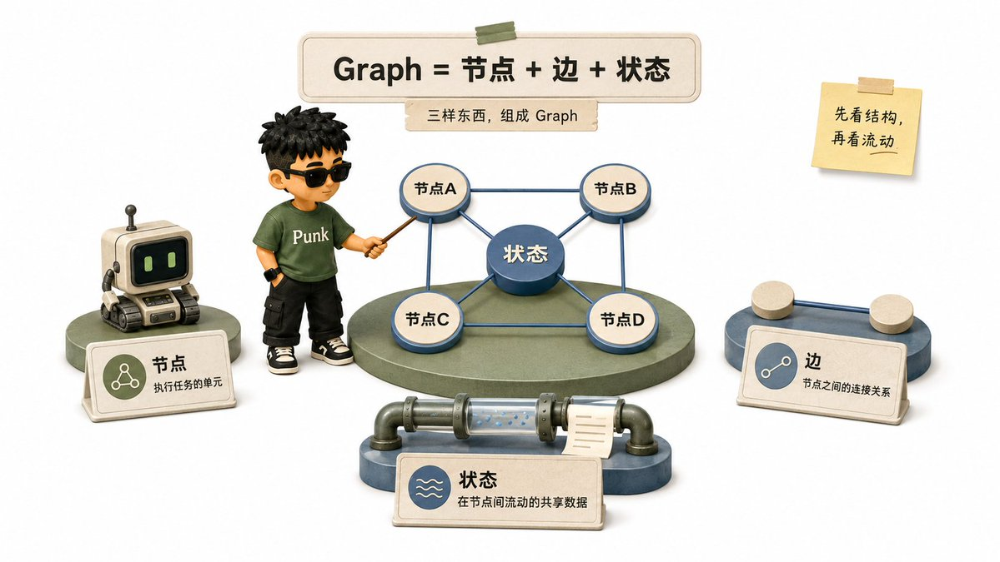
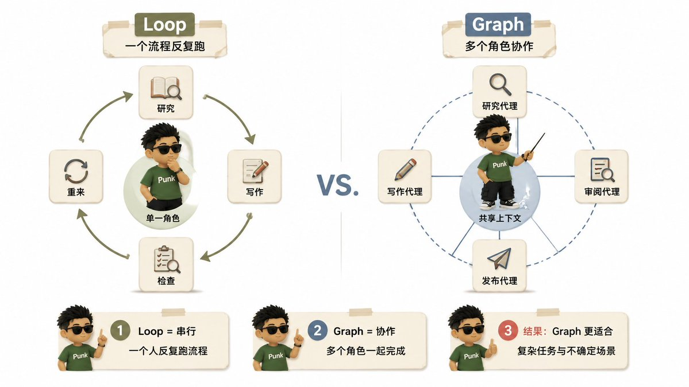
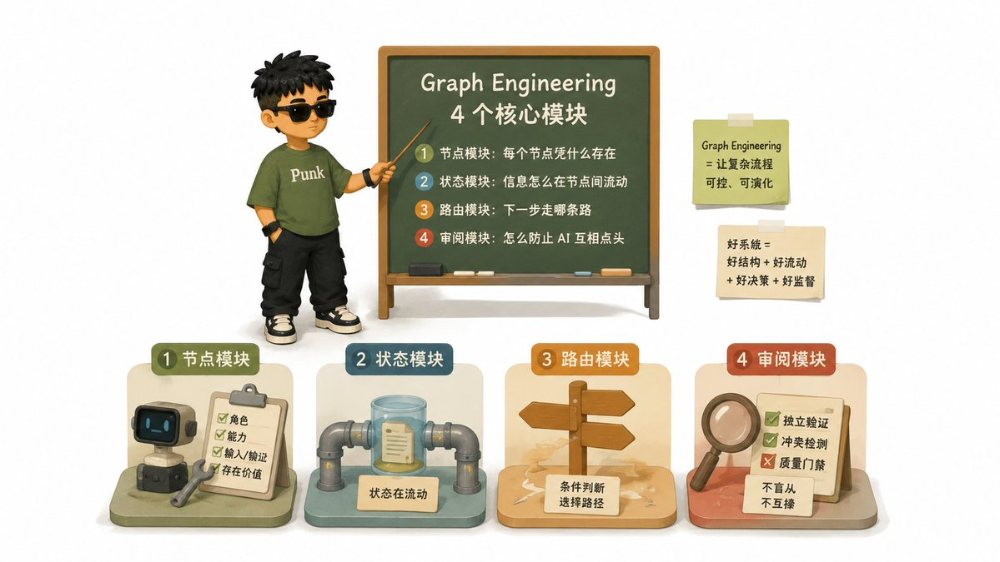

GRAPH ENGINEERING
Loop
不够用了？
任务一复杂，需要的不是更长的循环
而是一张协作图

从单循环，升级为多节点协作
THE THREE ELEMENTS
节点 + 边 + 状态

先看结构，再看信息如何流动
节点执行 · 边连接 · 状态传递
MINIMUM GRAPH
最小 Graph
不合格 ↩ 沿条件边退回修改
共享状态：资料、草稿、审阅结果
WHEN TO UPGRADE
什么时候用 Graph？
01 · 不同角色
02 · 条件分支
03 · 并行处理

串行单角色 vs. 协作多角色
LOOP IS NOT DEAD
Loop 是 Graph 的特例
Graph 的升级：连接多个 Loop，管理彼此协调
ENGINEERING CORE
4 个核心模块

节点 · 状态 · 路由 · 审阅
目标不是画图，而是让协作可靠、可演化
TWO RULES
两条关键原则
减少漂移，也更容易复现错误
START SMALL
从最小 Graph 开始
不是让更多 AI 开会
而是让协作可控 · 可追踪 · 可复现
来源：Adrian Punk @AdrianPunk115 · X Article
一个 AI 反复思考、执行、检查叫 Loop；复杂任务需要一张协作图
Graph 把任务拆成节点，用边连接，让状态在节点之间流动
需要不同角色、条件分支或并行处理时，就该考虑 Graph
Loop 没有死：它只是一个节点加一条指回自己的边
工程难点是节点、状态、路由和审阅，而不只是画流程图